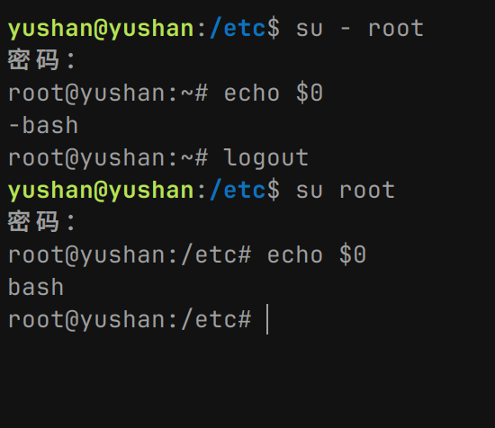

终端
概念
简单的概念就是linux是一个内核，然后需要一个shell来和linux内核打交道，bash就是shell的一种，其他的还有ksh,zsh,sh，和用户打交道的就是终端，它来接收用户输入的信息，传递到使用的bash里，终端比如konsole,zutty,terminator，很多……
- 终端：人机接口的工具，输入shell命令的工具，如konsole，zutty
- bash：是shell的一种类型，其他的还有zsh ，sh ，dash
- shell：是“壳”的意思，是在计算机内核之上套了一层，用来接收用户指令的界面
shell
分类：
- 图形界面shell：如linux的ghome， kde，
- 命令式shell：如sh/bash/zsh/ksh
交互式和非交互式
- 交互式shell：是与用户交互的，等待用户输入的命令的shell，
- 非交互式shell：是以脚本运行的，比如编写一个
start.sh，就可以用bash工具运行它
登录式和非登录式
- 这个是根据两种shell所读取的配置文件不同而区分的
- 登录式shell：当第一次登录linux系统时，分配的shell就是登录shell，还有在终端使用
su命令登录后，只能使用logout命令退出的就是登录式shell，比如使用虚拟机时没有安装GUI，那个使用root提示的就是登录shell，还有ssh远程连接时，那个也是登录shell，读取文件：- /etc/profile
- /etc/profile.d/*.sh
- ~/.bash_profile
- ~/.bashrc
- /etc/bashrc
- 非登录式shell：和用户无关的shell，比如在linux系统里，使用终端打开的shell，那是非登录的，它读取的文件是不一样的。
- ~/.bashrc
- /etc/bashrc
- /etc/profile.d/*.sh
判断
- 要进行测试的话，在每个文件内添加
echo命令就可 - 判断是哪个shell，-bash是登录式shell

使用
Last modified on 2024-05-24